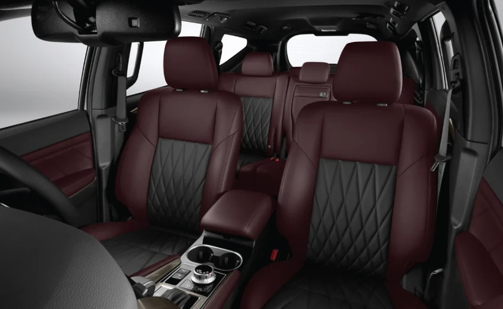
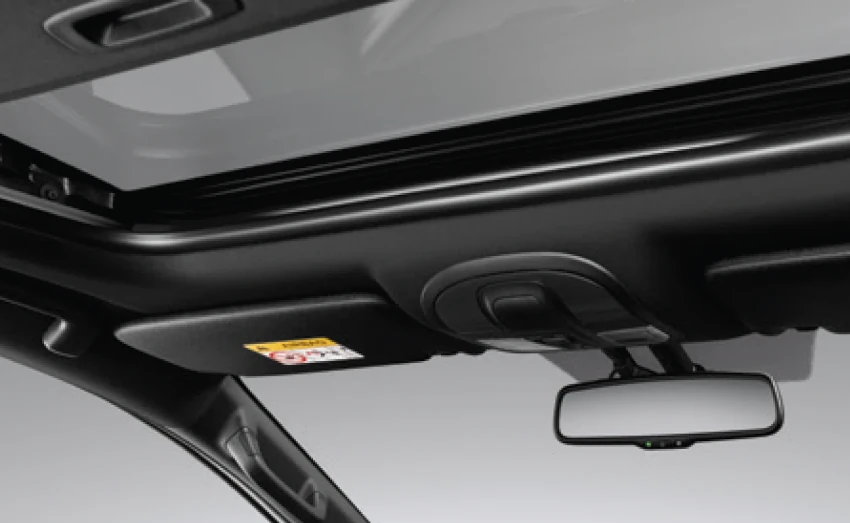

Mitsubishi Pajero Sport dibuat untuk mengakomodasi tujuh orang. Kami acungi jempol untuk kelegaan kaki dan kepala di baris kedua. Di depan pun, penumpang mendapatkan ruang yang cukup, meski di baris terakhir tidak bisa dibilang istimewa.
Yang patut disayangkan desain dashboard modern, malah memberi kesan sempit. Ini terutama terlihat pada bagian tengah dashboard yang tebal dan menyambung hingga ke konsol di antara dua kursi depan. Parasnya terlihat agresif dengan lekukan yang tegas. Lapisan krom yang mendominasi tidak membuanya jadi aneh atau norak, tapi memperkuat kesan tangguh.
Desain agresif juga menjalar ke bagian sisi, lekukan sepatbor dan garis bodi terlihat tegas. Selera kami bilang lengkungan di jendela baris ketiga terlalu menukik, sehingga membuat kaca terlihat kecil dibanding pilar D di belakangnya. Tapi sekali lagi, ini hanya masalah selera.
Pajero Sport berdiri di atas platform ladder frame. Platform model ini tangguh untuk medan berat, tapi kompensasinya pengendalian di kecepatan tinggi dan kenyamanan tidak bisa dibanggakan. Itulah kenapa, Pajero Sport dan Fortuner punya jok yang tebal. Di kecepatan tinggi, posturnya yang jangkung juga memberikan efek limbung yang cukup terasa, terutama saat membelok di kecepatan menengah, dengan sudut yang tidak terlalu tajam.


| Type Mobil | Harga |
|---|---|
| Dakar Ultimate 4x4 AT |
|
| Dakar Ultimate 4x2 AT |
|
| Dakar 4x2 AT |
|
| Exceed 4x2 AT |
|
| Exceed 4x2 MT |
|
| GLX 4X4 MT |
|
Rasakan kenyamanan kabin mewah dan modern dengan dashboard yang sporty, melengkapi petualangan berkendara Anda.
*Tersedia di varian Dakar Ultimate 4×2 dan Dakar Ultimate 4×4
Tire pressure warning memudahkan pengemudi memantau tekanan ban secara real-time untuk keamanan dan kenyamanan berkendara.
*Tersedia di seluruh varian Dakar
Radar sensor pada bumper belakang mampu mendeteksi kendaraan di blind spot belakang, serta kanan dan kiri mobil. Saat kendaraan lain terdeteksi, indikator peringatan disertai buzzer muncul di kaca spion.
*Tersedia pada varian Dakar Ultimate 4×2 dan Dakar Ultimate 4×4
Teknologi NanoE X menggunakan partikel air berukuran nano yang mengandung radikal OH untuk menetralkan bakteri, virus, jamur, dan alergen di udara. Selain itu, teknologi ini juga membantu menghilangkan bau tidak sedap dan menjaga kelembapan kulit serta rambut.
*Tersedia pada varian Dakar & Dakar Ultimate
Handsfree Power Liftgate hadir dengan sistem tanpa kunci yang memberi kemudahan bagi Anda. Ada tiga cara pengoperasian:
1. Hands-free access.
2. Close and lock function.
3. Height memory.
*Tersedia pada varian Dakar Ultimate
Warna putih pada grill memberikan kesan elegan pada bodi mobil, menciptakan tampilan yang berkelas dan tangguh. Tampilan baru under garnish memberikan sentuhan ramping dan modern pada bagian bawah mobil.
Desain baru velg dual-tone membuat kendaraan Anda tampil lebih modern dan sporty, meningkatkan performa dan stabilitas di setiap perjalanan.
Desain modern dan dinamis Rear Under Garnish meningkatkan penampilan eksterior sekaligus memberikan perlindungan tambahan, menegaskan karakter tangguh dan mewah pada kendaraan Anda.
Kontrol kendaraan lebih mudah dan efisien dengan visualisasi informasi yang jelas dan intuitif, meningkatkan pengalaman berkendara Anda dengan tampilan yang modern dan berkesan.
*Tersedia di semua varian DAKAR
Temukan kenyamanan kabin yang mewah dan modern, membuat petualangan berkendara Anda lebih berkesan.
*Tersedia di varian DAKAR Ultimate 4×2 AT & DAKAR Ultimate 4×4 AT.
Fitur pelindung panas memastikan kursi tetap sejuk dan nyaman meskipun terkena sinar matahari langsung, menjadikan perjalanan Anda lebih menyenangkan.
*Tersedia di varian DAKAR Ultimate 4×2 AT & DAKAR Ultimate 4×4 AT
Nikmati kenyamanan dan keamanan dalam setiap perhentian dengan fitur Rem Parkir Elektrik dan Brake Auto Hold terbaru pada Mitsubishi Pajero Sport. Inovasi ini membawa kemudahan dan ketenangan saat berhenti di tanjakan.
*Tersedia di varian DAKAR & DAKAR Ultimate
Bagasi yang luas dengan lantai datar memberikan fleksibilitas untuk mengakomodasi berbagai macam kebutuhan muatan Anda.
Kamera yang dipasang pada berbagai sisi memberikan tampilan blind spot untuk membantu Anda parkir dengan lebih aman. Sensor ultrasonik juga memberi peringatan berupa warna berkedip saat terlalu dekat dengan objek lain.
*Tersedia di semua varian Dakar Ultimate 4×4 AT
Membantu mencegah benturan depan dan meminimalisir dampaknya jika benturan tidak dapat dihindari. FItur ini mendeteksi kendaraan lain dan pejalan kaki melalui kamera dan radar laser.
*Tersedia di semua varian Dakar & Dakar Ultimate
Menjaga jarak melalui radar dengan kendaraan di depan untuk meningkatkan kenyamanan berkendara terutama saat terjadi kemacetan.
*Tersedia di semua varian Dakar & Dakar Ultimate
Sistem akan menyalakan suara serta menampilkan peringatan saat sensor depan atau belakang mendeteksi objek yang menghalangi jalur saat parkir dan mengontrol tenaga mesin untuk mencegah mobil melaju mendadak tanpa disengaja.
*Tersedia di semua varian Dakar & Dakar Ultimate
ABS Mencegah roda mengunci saat pengereman mendadak, sedangkan EBD memastikan pengereman merata menyesuaikan dengan beban kendaraan.
*ABS with EBD tersedia pada seluruh varian, Brake Assist tersedia pada varian Dakar & Dakar Ultimate
Fitur berbasis teknologi terkini memastikan perjalanan Anda menyenangkan, Layar besar 8-inch color LCD touch screen yang dapat terkoneksi dengan smartphone memudahkan anda memilih daftar musik pada USB maupun Bluetooth. Nikmati juga kemudahan mengakses aplikasi, panggilan telepon, dan navigasi langsung dari layar sentuh yang responsif.
*Pada varian Dakar Ultimate 4×4 AT, Smartphone-link Display Audio (SDA) dapat dihubungkan dengan layar pop-up 8-Inch Color LCD Meter
Desain interior yang berkelas, kursi yang ergonomis dan material kulit yang berkualitas tinggi menciptakan suasana mewah di dalam kabin, sekaligus memberikan kenyamanan dan gaya yang tak tertandingi.
*Tersedia di varian DAKAR Ultimate 4×4 AT dan DAKAR 4×2 AT
Nikmati keindahan petualangan dengan sentuhan kemewahan. Buka langit-langit kendaraan dalam satu sentuhan.
*Tersedia di varian DAKAR Ultimate 4×4 AT dan DAKAR 4×2 AT
Jadikan perjalanan lebih menyenangkan dengan Roof Monitor, menawarkan pengalaman menonton yang mengesankan, memungkinkan setiap penumpang menikmati konten favorit dengan kualitas gambar yang istimewa.
*Tersedia di varian DAKAR Ultimate 4×2 AT
Traksi di jalan off road menjadi lebih baik dengan memilih mode Gravel (tanah berpasir) , Mud/Snow (tanah berlumpur/bersalju), Sand (tanah berpasir) atau Rock (tanah berbatu).
*Tersedia di varian DAKAR Ultimate 4×4 AT
Mode ini akan mengaktifkan rem secara otomatis yang membantu Anda mengendalikan kecepatan saat jalanan menurun. HDC dapat diaktivasi pada rentang kecepatan 2-20 km/jam.
*Tersedia di varian DAKAR Ultimate 4×4 AT
Saat menanjak, HSA akan mencegah mobil mundur dengan menahan rem hingga dua detik setelah pedal rem dilepas.
*Tersedia di semua varian DAKAR
Secara otomatis bekerja mengontrol laju mobil agar tidak tergelincir saat melaju di jalan yang licin atau saat bermanuver dengan menyesuaikan kekuatan pengereman pada roda tertentu untuk menghindari selip.
*Tersedia di semua varian DAKAR
Halo! Ada yang bisa kami bantu?
Chat Sekarang